EventSphere
Online Event & Venue Booking Platform
Complete Project Documentation
BCA Semester V — Project Report
Version 1.0.3 | October 2026
Java 25 · Jakarta Servlet 6.1 · JSP 4.0 · PostgreSQL 18 · Apache Tomcat 11
1. Problem Statement
1.1 Background of the Problem
- Every month, hundreds of weddings, conferences, exhibitions, parties, and seminars are organized, and each one begins with finding and booking a suitable venue.
- Despite its importance, venue discovery and reservation remain largely manual, phone-driven, and fragmented, especially for customers without contacts in the event industry.
1.2 Scattered and Unreliable Venue Information
- Capacity, hourly rates, amenities, event-type suitability, and photographs are scattered across pamphlets, advertisements, and phone calls.
- Much of this information is incomplete or outdated.
- Comparing even two or three venues takes days of physical visits and follow-ups.
- Good venues stay invisible simply because they are never discovered.
1.3 No Trustworthy Availability Record
- Enquiries live in separate registers, diaries, spreadsheets, and chat messages.
- The same venue/date is frequently promised to more than one party.
- Double-bookings surface at the last moment, forcing cancellations and costly emergency re-arrangements.
- Neither customer nor administrator can verify at any moment whether a venue is truly free.
1.4 Non-Transparent Pricing
- Customers receive partial quotes over the phone.
- The real cost (hourly rate × duration, plus decoration, catering, and service charges) appears only in the final bill.
- The expectation–reality gap causes disputes, mistrust, and cancelled events.
1.5 No Dependable Quality Signals
- Advertisement claims cannot be distinguished from genuine service quality.
- Existing reviews are anonymous, unlinked to real bookings, and open to manipulation.
- Venues receive no honest, actionable feedback; customers decide blindly.
1.6 Unmanageable Administration
- Booking requests, approvals, customer/host records, bills, discounts, and complaints are handled through disconnected manual steps.
- There is no audit trail, so mistakes cannot be traced and misuse cannot be detected.
- Approvals, rejections, and replies depend on personal follow-up; important messages are missed or delayed.
- Peak-season demand cannot be analyzed from scattered records.
1.7 The Need
- Slow and risky for customers, reputation-damaging for owners, unmanageable for administrators.
- A single centralized computerized platform combining verified venues, availability records, transparent pricing, booking-linked reviews, and controlled administration — the problem EventSphere is designed to solve.
2. Objectives of the Project
- To develop a centralized web-based platform that brings venue listings, availability, bookings, reviews, bills, and administration together in a single system.
- To provide searchable and filterable venue listings with verified details such as capacity, hourly rates, amenities, event-type suitability, and photographs.
- To maintain a single, reliable record of venue availability through a booking calendar, so the same venue and date can never be promised to two parties.
- To enforce availability checks both at the time of booking and at the time of admin approval, eliminating last-moment double-bookings and cancellations.
- To display transparent, server-calculated pricing (hourly rate × duration) to the customer before booking confirmation, removing billing disputes.
- To implement a secure, role-based login system for customers, hosts, and administrators with encrypted password storage and session protection.
- To give administrators complete control over venues, bookings, customers, hosts, promo codes, bills, feedback, notifications, and reports, supported by an audit trail.
- To enable hosts to list and manage their own venues, upload photos, and track bookings for their properties.
- To allow reviews and ratings only against completed/approved bookings, and to let hosts reply, so feedback stays genuine and actionable.
- To automate communication through in-app notifications for approvals, rejections, replies, and booking updates.
- To provide bills for every booking along with booking confirmation and printable receipts.
- To protect the system through input validation, prepared statements, output escaping, and rate-limited authentication endpoints.
3. Scope of the Project
3.1 Functional Scope
- Venue management: adding, updating, photographing, activating, and deactivating venues with capacity, pricing, amenities, and event-type details.
- Venue discovery: keyword search with filters for event type, location, capacity, and budget, plus ratings and availability calendar.
- Booking management: single and multi-venue bookings, pending/approved/rejected/cancelled lifecycles, booking modification, and cancellation.
- Approval workflow: administrator approval or rejection of every booking with customer notifications.
- Billing: server-calculated totals, promo-code discounts, HTML bills, and PDF receipts.
- Feedback system: ratings, comments, and photos restricted to approved bookings, with host replies.
- User management: registration, role-based login (customer/host/admin), password reset, and "remember me" sessions.
- Notifications: in-app alerts for booking decisions, replies, and system messages.
- Reports and audit: booking statistics, revenue summaries, popular venues, and a complete admin audit log.
3.2 User Scope
- Customers: browse, book, pay-track, review, and manage their own events and bookings.
- Hosts: manage only their own venues and view bookings made on them.
- Administrators: full control over all entities, approvals, analytics, and audit.
3.3 Technical Scope
- Three-tier web application: JSP frontend, Java servlet/controller business layer, PostgreSQL database.
- Runs on Apache Tomcat with a HikariCP connection pool; builds with Maven into a deployable WAR.
- Security controls: BCrypt hashing, session fixation protection, prepared statements, output escaping, and rate limiting.
3.4 Out of Scope (Future Enhancements)
- Online payment gateway integration.
- Mobile application and its API.
- Multi-language support.
- Caching and advanced analytics beyond the current reports.
4. Modules of the Project
4.1 Authentication and Authorization Module
- Role-based login and registration for customers, hosts, and administrators.
- BCrypt password hashing, session management with fixation protection, and "remember me" login.
- Self-service password reset through secure single-use tokens.
- Authorization filters restricting every dashboard and action strictly by role.
4.2 Venue Management Module
- Venue creation, editing, photo upload, activation, and deactivation by admins and hosts.
- Venue search with filters for event type, location, capacity, and budget, with pagination.
- Venue details page with photo gallery, availability calendar, ratings, and reviews.
4.3 Booking Management Module
- Single and multi-venue bookings with event details, date, time slots, and guest count.
- Live price estimation and server-side total calculation with promo-code support.
- Pending/approved/rejected/cancelled lifecycle with admin approval workflow.
- Booking modification and cancellation with availability re-validation.
4.4 Billing Module
- Automatic bill generation for every approved booking.
- HTML bills with printable and PDF formats.
- Promo-code discounts applied transparently before confirmation.
4.5 Feedback and Rating Module
- Ratings, comments, and review photos restricted to approved bookings only.
- Average rating and review counts on venue cards and details.
- Host replies to customer reviews and admin feedback moderation.
4.6 Notification Module
- In-app notifications for booking approvals, rejections, replies, and system messages.
- Unread counts, mark-as-read controls, and role-specific inboxes.
4.7 Promo Code Module
- Creation, activation, and expiry control of discount codes by administrators.
- Automatic validation and discount application during booking.
4.8 User Management Module
- Customer, host, and administrator account administration.
- Host onboarding by admins, profile handling, and account removal with safeguards.
4.9 Reports, Analytics, and Audit Module
- Booking statistics, revenue summaries, popular venues, and monthly trends.
- Complete audit log of admin actions with timestamps for traceability.
4.10 Contact and Support Module
- Contact form with server-side validation and admin-side message handling.
- Error pages, flash success/error messaging, and toast notifications across the site.
5. System Architecture
5.1 Architectural Overview
- Three-tier architecture with server-rendered presentation: (i) Presentation — JSP pages with HTML, CSS, vanilla JavaScript; (ii) Application — Jakarta servlets, controllers, filters, services, DAOs on Apache Tomcat 11; (iii) Data — PostgreSQL 18 over JDBC with a HikariCP pool.
- Informal Model-View-Controller: JSPs render views; servlets/controllers enforce authorization; models carry data; DAOs isolate SQL. No ORM and no frontend framework.
5.2 Presentation Tier
- Thirty JSPs by audience: 9 public, 6 customer, 10 admin, 3 host, 2 error pages.
- One shared stylesheet (~75 KB) and one shared script (~21 KB); progressive-enhancement scripts for search, modal, toasts, and lightbox.
- The browser never contacts the database; it only requests servlet URLs and renders HTML.
5.3 Application Tier
- 25+ controllers/servlets: public handlers (login, logout, register, venues, contact, feedback, password reset, notifications) and business controllers (booking, billing, PDF bills, admin and host management).
- Filters guard every protected URL: authentication, role checks, "remember me", rate limiting on auth endpoints, CSRF validation on state-changing forms.
- Utilities: DBUtil (single HikariCP pool, env-based config), MailUtil (SMTP point, off by default), TokenUtil, EscapeUtil (XSS-safe output), FormatUtil.
- 12 DAO classes use prepared statements and try-with-resources; multi-table booking writes are transactional.
5.4 Typical Request Flows
- Browse and book: filter venues → details with availability calendar → booking form with live estimate → BookingServlet re-validates, checks overlaps transactionally, stores event plus booking atomically.
- Approve: admin confirms in the styled modal → status flips, audit row written, customer notification queued.
- Review: only approved bookings for that customer and venue are offered; submission stores rating, comment, and optional photo.
5.5 Data, Security, and Deployment
- Thirteen tables in one eventsphere database: identity (admin/customer/host users, BCrypt hashes), catalogue (venues, events), transactions (bookings, bills), engagement (feedback, notifications, promocodes), security (password resets, login tokens), governance (audit logs).
- BCrypt cost-12 passwords; SHA-256 hashed single-use tokens; fixation-protected HttpOnly sessions (30 min); identity always re-read from session; rate-limited auth endpoints.
- Maven builds one EventSphere.war (Java 25) deployed to Tomcat 11 with JDBC to PostgreSQL; configuration via environment variables; no external services required.
6. Database Design
6.1 Design Overview
- Single PostgreSQL database, surrogate SERIAL keys, human-readable business keys (booking_number, bill_number, promo code), DECIMAL(10,2) money, defaulted timestamps, role-split identity tables.
6.2 Tables (13)
- Identity: admin_users, customer_users, host_users (id, full_name, email UNIQUE, password_hash BCrypt-12, timestamps).
- Catalogue: venues (capacity CHECK > 0, rate CHECK ≥ 0, status AVAILABLE/MAINTENANCE/INACTIVE, owner links with SET NULL); events (date/time/guests, venue link, DRAFT default).
- Transactions: bookings (unique number, event+venue+customer CASCADE links, amounts, promo link SET NULL, PENDING/APPROVED/REJECTED/CANCELLED); bills (one-to-one with bookings, subtotal/advance/balance, ISSUED/PAID/CANCELLED).
- Engagement: feedback (rating 1–5, comment, photo, admin reply; one review per booking via partial unique index); notifications (role inbox, read flags); promocodes (1–90% off, usage counters).
- Security: password_resets and login_tokens (hashed single-use/expiring tokens); governance: audit_logs (actor, action, target, detail, time).
- 22 indexes (emails, statuses, joins, tokens, inbox triple, audit ordering); CHECK constraints reject invalid data at the database itself.
7. Frontend Implementation
7.1 Principles
- Plain HTML5/CSS3/vanilla JS, no frameworks or build step; server-rendered pages with progressive enhancement; escaped output, POST for state changes, class-based styling with page namespaces (dash-*, cust-*, cal-*).
7.2 Pages and Styling
- 30 JSPs: public home/search/details/booking/auth flows; customer dashboard, history, bills, feedback, inbox; admin dashboards, queues, entities, analytics; host views; branded error pages.
- Single stylesheet (~75 KB): tokens, navbar, buttons, forms, alerts, cards, grids, hero, venue cards, dashboards, bills, calendar, toasts, confirm modal, lightbox, skeletons, five breakpoints, focus/reduced-motion support.
- Single script (~21 KB): submit-time plus inline validation with aria-invalid, live INR price estimator, AJAX venue search with skeletons and history state (full-navigation fallback), in-page confirm modal and toasts replacing native dialogs, lightbox, multi-booking, loading spinners, date clamping.
- Vector brand logo and SVG favicon (original PNG kept for print); every destructive click guarded by the styled modal.
8. Database Implementation
- Handwritten JDBC + DAO pattern; all connections from one lazy double-checked HikariCP singleton (eventsphere-pool: max 10, min-idle 2, 10 s timeout), explicit PostgreSQL driver registration, env-overridable URL/user/password.
- Parameterized statements and try-with-resources throughout; atomic booking+event+bill writes; approval re-checks overlaps, then flips status, audits, and notifies as one unit; CASCADE deletes keep the graph clean.
- Schema ships as one ordered database.sql (drops, 13 tables, late promo FK, indexes, BCrypt/SHA-256 seeds); fresh setup is two commands plus verification. Backups via pg_dump; health is pool log line + table count + login round-trip.
9. Test Cases
9.1 Automated Suite (JUnit 5 — 21 tests, all passing)
| ID | Class | Coverage | Result |
|---|
| AT-01 | BookingAvailabilityTest | Availability checks for validation | Pass |
| AT-02…04 | VenueTest | Construction, accessors, toString | Pass |
| AT-05…07 | EventTest | Construction, accessors, toString | Pass |
| AT-08…10 | UserTest | Construction, accessors, toString | Pass |
| AT-11…14 | FeedbackTest | Construction, rating 1–5 enforcement | Pass |
| AT-15…17 | BookingTest | Identity fields, accessors, summary | Pass |
| AT-18…19 | BookingWorkflowTest | Pending-only cancel; valid transitions | Pass |
| AT-20…21 | LoginPageFormTest | Login form validation | Pass |
9.2 Functional Cases (manual highlights)
| ID | Flow | Expected Result |
|---|
| FT-01…03 | Registration, duplicate, invalid input | Created / rejected-existing / field errors |
| FT-04…08 | Role logins, anonymous and cross-role access | Correct dashboards; 403 isolation |
| FT-09…12 | Browse, AJAX filters, details page | Correct subsets; calendar, reviews, lightbox render |
| FT-13…15 | Valid, past-date, and overlapping bookings | Created PENDING / blocked / blocked |
| FT-16…18 | Approve, reject, modal cancel | Status flips + audit + notice / no change |
| FT-19…23 | Cancel, edit, bill, valid/invalid promo | Updated; correct totals; counters increment |
| FT-24…26 | Review approved booking; no-booking; duplicate review | Saved / not offered / rejected |
| FT-27…29 | Notifications, password reset, error pages | Inbox + counts; single-use token; branded 404/500 |
9.3 Security Cases
- SQL injection neutralized (prepared statements); XSS escaped; admin POSTs return 403 anonymously; sessions rotate on login; dumps hold hashes only; auth endpoints rate-limited; identity re-read from session.
10. Test Results (executed October 16, 2026)
- Automated: 21/21 pass, BUILD SUCCESS. Live: registration, duplicate rejection, role logins, booking ES-2026-000015 (₹8000 = ₹2000×4h), past-date and overlap blocks, approval with audit + notification, 5-star review — all PASS; test data fully cleaned up afterward.
- All public/customer/admin pages HTTP 200 with no marker leakage; anonymous admin URLs correctly gated. Verdict: no defects open.
11. User Manual — Input Screens
Home search (type/guests/budget/date); contact form; role-tabbed login with remember-me; registration with confirm; forgot/reset password; venue filters with multi-select; conditional feedback form; booking form with live estimate; booking editor; admin/host venue forms; promo/host/admin creation; modal confirmations on every destructive click.
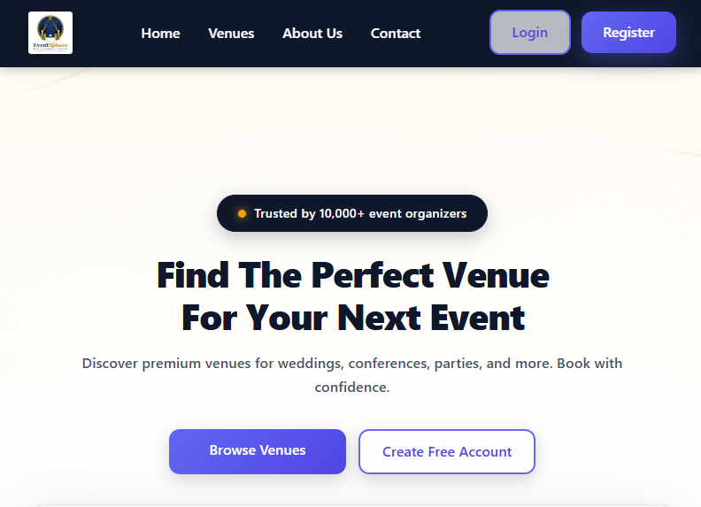
Fig 1 — Home hero with venue search
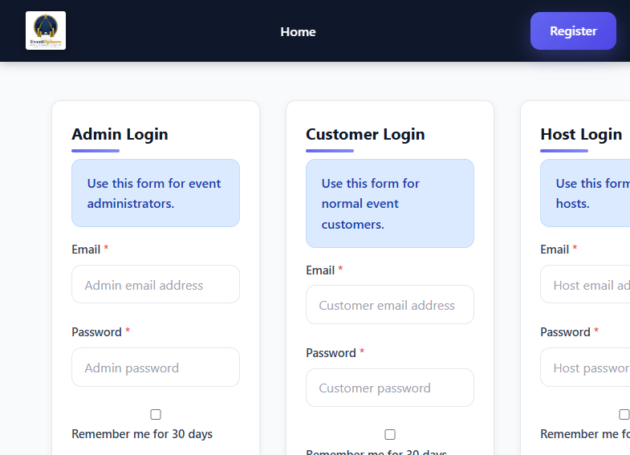
Fig 2 — Role-based login
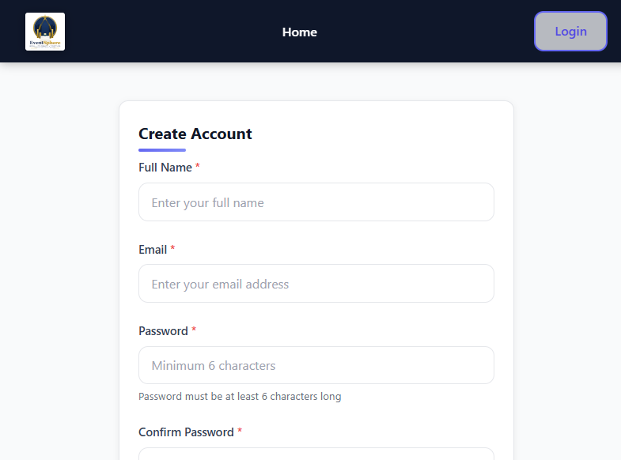
Fig 3 — Registration form
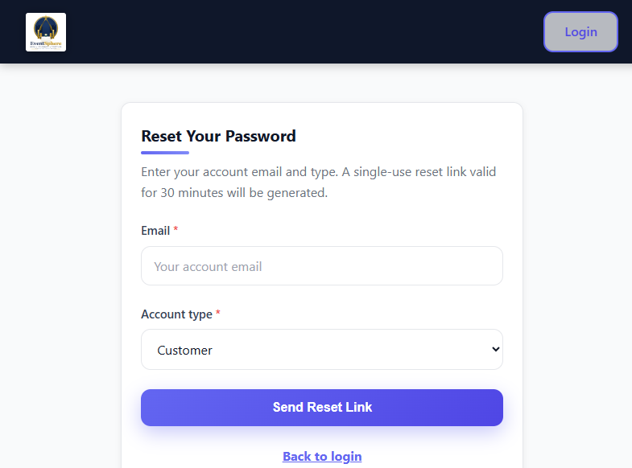
Fig 4 — Password reset request
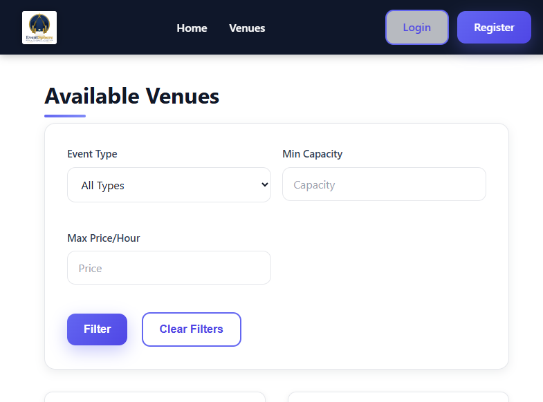
Fig 5 — Venue filters
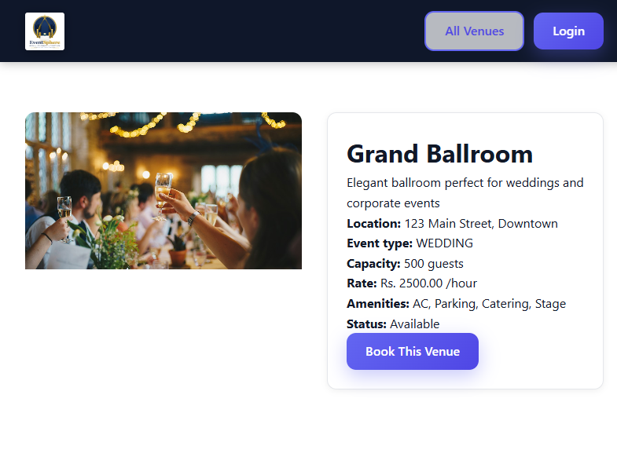
Fig 6 — Venue details and booking entry
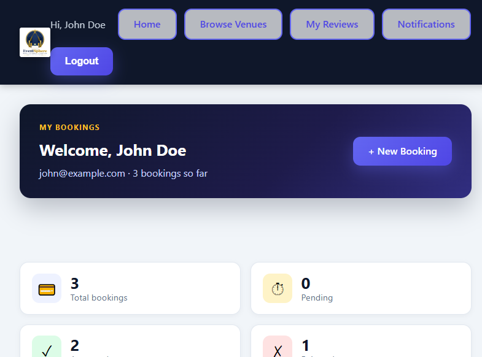
Fig 7 — Customer dashboard
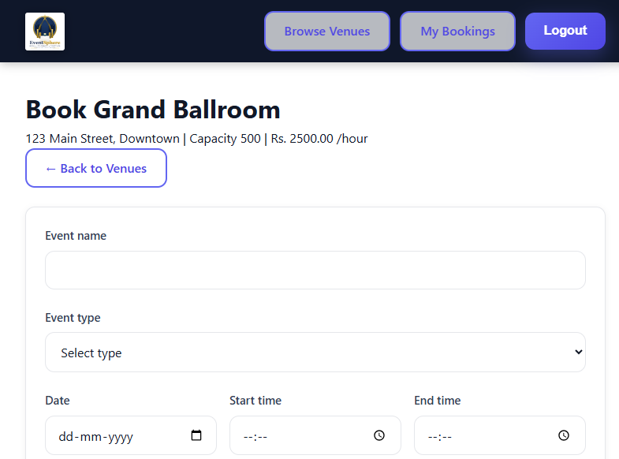
Fig 8 — Booking form
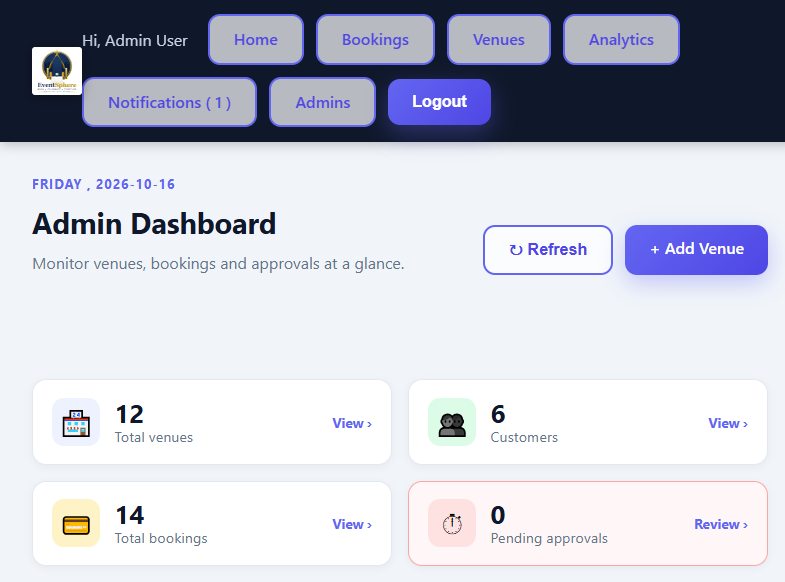
Fig 9 — Admin dashboard
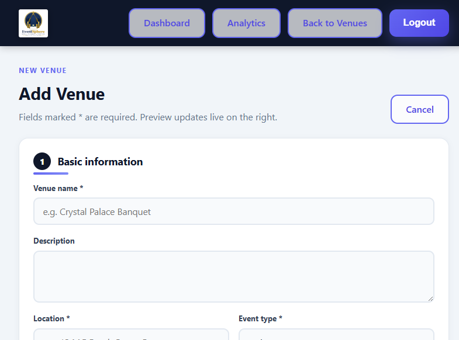
Fig 10 — Venue creation form
12. Output Screens with Data
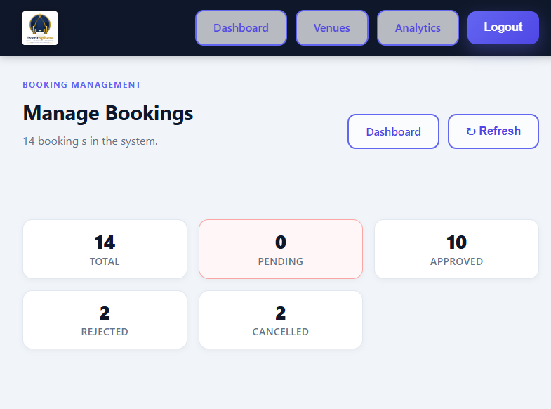
Fig 11 — Booking register: 14 total (10 approved, 2 rejected, 2 cancelled)
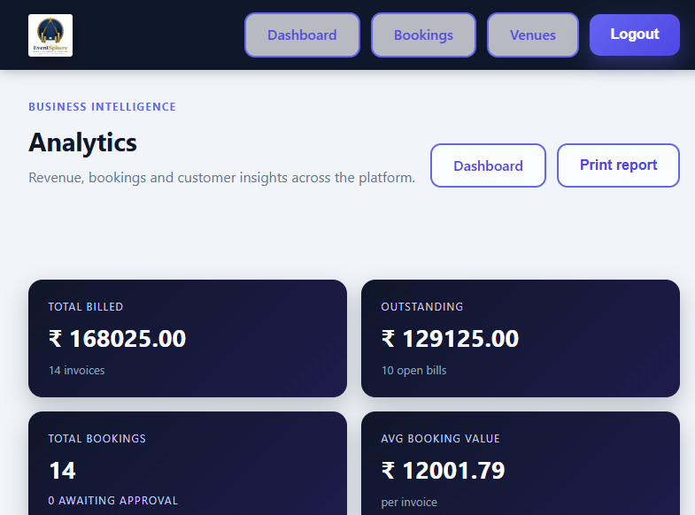
Fig 12 — Analytics: ₹168025.00 billed, ₹129125.00 outstanding
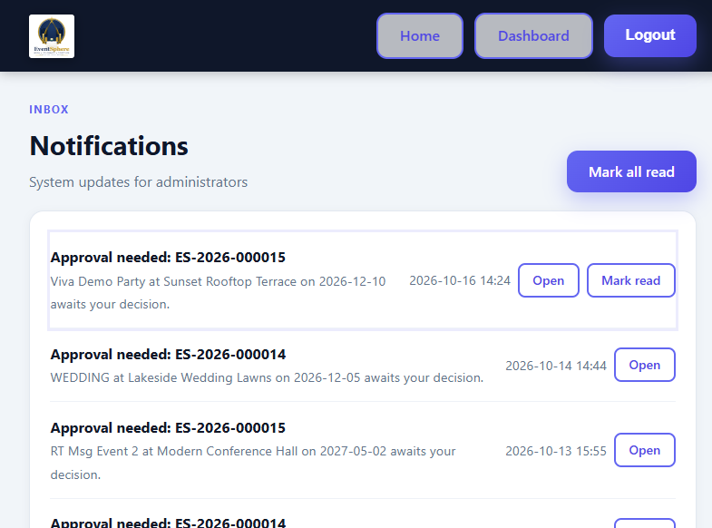
Fig 13 — Admin notification inbox with approval requests
13. Data Reports (live, October 16, 2026)
| Metric | Value |
|---|
| Venues / customers / bookings | 12 / 6 / 14 (10 approved, 2 rejected, 2 cancelled, 0 pending) |
| Total billed / outstanding / average | ₹168025.00 / ₹129125.00 / ₹12001.79 |
| Top venue revenue | Crystal Palace Banquet ₹52900.00; Emerald Convention Center ₹32375.00; Modern Conference Hall ₹24450.00 |
| Monthly trend | 2026-10: 7 (₹95475) · 2026-11: 3 (₹36340) · 2026-12: 4 (₹36210) |
Sources: /admin/analytics.jsp, /admin/bookings.jsp, /admin/notifications.jsp; aggregates verified in psql (GROUP BY status, venue revenue join, monthly trend).
14. Project Summary
EventSphere is a complete, working Event & Venue Booking Platform: three-tier Java web application (JSP, servlets/controllers, PostgreSQL) shipped as one WAR on Tomcat 11. Customers discover 12 verified venues, see live price estimates, and book online; admins approve through an audited workflow; hosts manage their venues; approved bookings yield bills and verified reviews. Verified October 16, 2026: 21/21 tests pass, all pages HTTP 200 with role isolation, 14 bookings (10 approved), ₹168025.00 billed. Status: complete, tested, deployed, and documented.
15. Project Structure and Technologies
| Layer | Technology | Contents |
|---|
| Language/build | Java 25, Maven 3.9 | 53 classes; EventSphere.war (~12 MB) |
| Web/server | Jakarta Servlet 6.1, JSP 4.0; Tomcat 11 | ~25 handlers; 30 JSPs; filters; web.xml |
| Data | PostgreSQL 18, JDBC, HikariCP 5.1.0 | 13 tables; 22 indexes; database.sql |
| Security | BCrypt-12, SHA-256 tokens | Role tables; rate limits; CSRF; escaping |
| Docs/PDF/tests | OpenPDF 1.3.30, JUnit 5.10.2 | Invoice PDFs; 21 automated tests |
| Client | HTML5, CSS3, vanilla JS | 75 KB CSS; 21 KB JS; SVG branding; no frameworks |